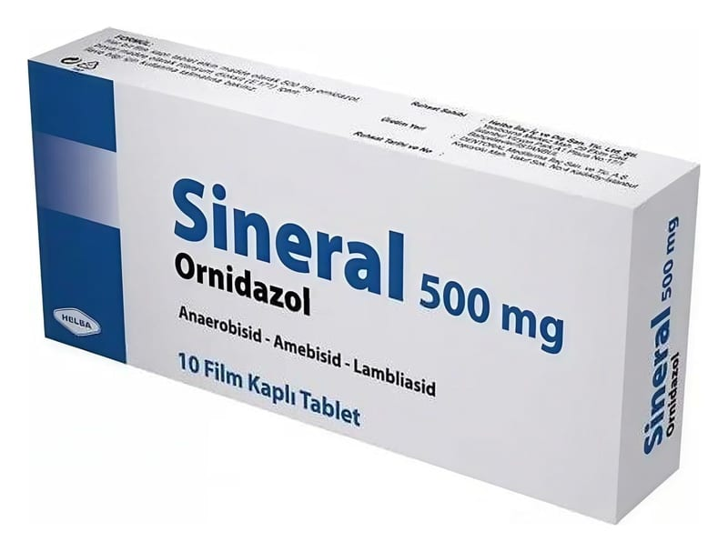

Sineral 500 mg Kaplı Film Tablet, 10 Adet

Ne için kullanılır
KT · Bölüm 1SİNERAL, antibakteriyel (bakterilere karşı etkili) ve antiprotozoal (protozoonlara karşı etkili olan) özellikteki ornidazol etkin maddesini içeren bir ilaçtır.
SİNERAL tabletlerin her biri 500 mg ornidazol içermektedir. SİNERAL, 10 tablet içeren ambalajlarda sunulmaktadır.
SİNERAL, aşağıda belirtilen durumlarda kullanılır: • Amebiasis (ishal ve mide ağrıları ile seyreden parazit hastalığı), • Ürogenital trichomoniasis (parazitik idrar yolu enfeksiyonu), • Lambliasis (ishal ve yorgunluk ile seyreden parazit hastalığı), • Tıbbi-cerrahi bir tedaviyle bağlantılı duyarlı bir mikroorganizma enfeksiyonu, • Cerrahi bir prosedürle bağlantılı duyarlı mikroorganizma enfeksiyonu durumunda önleyici bir tedbir olarak, • Enjekte edilebilir tedaviler için önleyici amaçlı tedbir tedavisi